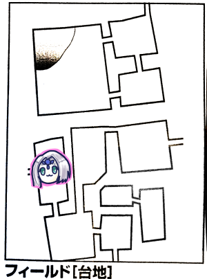

さて今回も始まりました。記念すべき第20回でございます。長く続いたものです。でもまだ5つある廃都のうち2つ目を探してる段階だよ！
「振り直しできる施設って今何があるんだっけ？」という話になったのでここで確認。
・戦闘指南所で命中振り直し×2
・噴水広場で精神抵抗振り直し
・公衆浴場で生命抵抗振り直し
ナナシ「命を守る3点セットですね」
前回は台地の石碑の丘で遺跡を発見したところでした。
ここ微妙に把握できてないんですが慈愛がどーのと書かれた石碑の下に遺跡があって、石碑が倒れている場所の地下通路がおそらくハブになっている洞窟エリアと繋がってると思われる…という感じでしたっけ。
とりあえずまた遺跡が増えたみたいですね。探索でランダムに見つけた遺跡じゃないのでなんかあるのかもしれないけど。
ひとまず当初の目的通り最北西エリアへ向かいます。
まずは南へ移動。

タッシュ「イベント3です」
GM「風のいたずらイベントです」
ナナシ「タッシュ先生のスカートがめくれちゃう」
タッシュ「いやーん。1です」
GM「透き通った美しい歌が聞こえてくる！歌声効果決定表1番を振ってもらいます」
タッシュ「4」
GM「魂の歌です。心を揺さぶるような元気づけてくれる歌。ロックな感じの」
「ロック？」
GM「Lisaのような。全員MP7点回復します」
ブルーローズ「いきなりアップテンポに変わった」
ナナシ「ブルーローズとは違う魂を揺さぶる歌」
みぞれ「ここ地震に注意しなきゃいけない場所だ。えっとセージ判定がいるんだっけ」
GM「いえ、一度成功してるので宣言だけでいいです。安心してください」
ブルーローズ「安心してビビッド歌います」
ナナシ「探索します」
GM「しおれたキノコを見つけました」
ナナシ「お、初顔」
「想像力を喚起させるアイテムだね」
「やめて」

ピーター「イベント1です。平和！」
ナナシ「北へ行く登攀は自由行動？」
GM「場所分かってるので移動になります」
ナナシ「じゃ探索します」
GM「つばめむぎを見つけました」
ナナシ「エンバク！」
GM「北側に絶壁があります。これはフリークライミングのプロでも登攀は難しいでしょう」
ナナシ「ナナシが上って上からロープを垂らします」
GM「崖は4、50mあります。しかし洞窟があってその洞窟を上ると上までいけます」
「じゃ上りましょう」

GM「膝ぐらいまでの背の高い草に覆われた平原です。フィールドの南側が見渡せるので相当高い位置にあります。東側が絶壁で人工的に作られた通路が上に続いています。このマップのシミみたいなものは湖です」
ブルーローズ「出た！水！」
GM「湖の奥には墜落した飛空船があります。コケとかに覆われていてだいぶ昔に墜落したんだろうなってことがわかります」
GM「ひとまずイベントを決めましょう」
みぞれ「3」
GM「風のいたずらイベントです」
みぞれ「1」
GM「謎の歌パート2です」
みぞれ「1です」
GM「命の歌です。北欧の歌姫エンヤのような歌声が聞こえてくる！HPが14点回復します」
GM「では自由行動どうぞ」
みぞれ「ブルーローズ先生！」
ブルーローズ「ウルトゥケを！バードの本能がここで歌えと言ってますわ！」
GM「みんなで頑張って情報集めて整理してきたことを勘でまとめてきた！こういう自分の手柄にしちゃうの俺大好き。それじゃ何を謳う？」
ブルーローズ「本能がウルトゥケを歌えと言ってますわ！」
GM「MPを消費してバードで判定してください」
ブルーローズ「11」
GM「11は成功です。演奏は成功しました。あとは合ってるかどうかですが…湖の中に大きな都の廃墟が現れました！さあ各自ラピュタの曲を脳内BGMを流してください」
ブルーローズ「そこには天女のようなブルーローズの姿が」
GM「遺跡は6時間、消えたら以後1週間は現れませんので気を付けてください」
ブルーローズ「ご苦労だったな、見よ、これがウルトゥケだ！」
みぞれ「天女がラピュタ王にすり替わった」
ナナシ「湖の探索します、18」
GM「成功です。足切りは15でした。飛空船を調べようと思ったら湖を渡らなければいけません。水泳判定を3回することになります。ボートや水中騎獣がいれば判定不要です。魔物もいて、遭遇率は50%です。これは水泳判定の後に1回判定します」
「無茶だ、今度ボート持ってこよう」
みぞれ「魔香草をブルーローズに使います」
GM「レンジャーレベル5なのか、これはよく炊けている」
「これはもうドラッグですね」
「徹夜の効果も消せませんか？」
GM「無理です」
ピーター「レンジャーあるから探索しようかなー」
GM「知力が高いのか」
ピーター「14」
GM「ぴったり成功。トリカブトを見つけました。その時ピーターは思った、私を非常食扱いするナナシの食事にこれを混ぜて」
ピーター「心を読まれた」
ナナシ「ピーター知力5あるのか」
ブルーローズ「かしこすなぁ！」
廃都ウルトゥケ
GM「久しぶりだね廃都の冒険！3年ぶりぐらい！では廃都のおさらいをしましょうね」
・1ターンに1回移動することができる
・1ターンは30分
・6時間が経過すると強制退去させられる。つまり制限時間は12ターン
・移動は通常移動、急いで移動、戻る、の3種類
GM「なおここの深度は52になります」
「深いな！」
GM「ここは小さな建物がいくつも集まっている素朴な街です」
「『優しき』ウルトゥケだからね」
GM「建物が密集しているのは中央だけです。辺りは蔦や草によって覆われています。階層と呼んではいますがこれは街を中央に向かって進んでいくイメージになります。では移動方法を決めてください。難易度は最初は11です」
ブルーローズ「先を急ぐ方が達成値が高くなるんだっけ？」
GM「先を急ぐと危険感知とかに-4ペナくらうけど2d6進めるよ」
廃都ウルトゥケ～深度0
急いで進む→成功→2d6=5進む
GM「特にイベントはありません。古き街並みを急いで進みます」
廃都ウルトゥケ～深度5
30分経過。
GM「達成値は11のまま変わりません」
ナナシ「急いで進みます。15成功」
GM「深度決めてください」
ナナシ「11！」
「さすがナナシ！」
廃都ウルトゥケ～深度16
1時間経過。
GM「深度16か、てことはイベントがあります」
ブルーローズ「出たわねイベント」
GM「部屋を発見しました。どこかの家なんだろうね、特別な部屋がありました。これが何なのかを決めていくんですが…ブルーローズからいこうか。1d6振ってくれる？」
ブルーローズ「2です」
GM「この部屋には何もありませんでした！」
みぞれ「出目によってはオボロンみたいに腰飾りとかあったのでは？」
GM「自由行動できますよ」
ブルーローズ「ビビッド歌っていいかな」
GM「あれ効果時間何分だっけ？」
ブルーローズ「10分」
GM「発動に3分、20分ごとにしか効果がない、てことでOKですね」
ブルーローズ「びびびーびびーびーびー(君をのせてのメロディーで)」
ピーター「気に入ってるね」
ブルーローズ「ウルトゥケバージョンです」
GM「探索判定の達成値が13になりました。探索モードを決めてください」
ナナシ「難しいな…これを急いで行くラストにしよう、成功」
GM「お見事でございます」
ナナシ「6進みます」
「まあまあ」
廃都ウルトゥケ～深度22
1時間半経過。
GM「また部屋を発見しました。タッシュ先生お願いします」
タッシュ「5です」
GM「そこには魔法陣が！魔法陣は光輝きー？効果を決めてください」
タッシュ「えいや！4！アイテム！アイテム！」
「振り出しに戻る」
タッシュ「振り出しはダメだろ」
GM「白い輝きが魔法陣からあふれ、HPMPが2d6点ずつ回復する！これ1回しか使えないんだけど、ここに戻ってくれば使えるということを覚えておくといいと思います」
ナナシ「狙い撃ちしなきゃいけないな」
GM「このダンジョンのイベントには範囲があります。階層が22～23の場合にこの魔法陣が出現します」
みぞれ「どのみち狙い撃ちだな」
GM「そしてこの魔法陣は1人1回使える権利があります」
ブルーローズ「回復必要な人いる？」
いませんでした。
GM「これで達成値14に格上げされました」
ナナシ「普通に進みます。成功、3進む」
廃都ウルトゥケ～深度25
2時間経過。
ナナシ「お、ちょうど半分じゃん」
GM「そこには蓋の空いた小箱が置いてあり、雑多な金属が詰まっています」
みぞれ「金貨！」
GM「その金貨を見た人見識判定お願いします」
みぞれ「うさちゃーん」
タッシュ「なんか取ろうかなー」
ブルーローズ「ダンジョンの中ではタッシュ先生に光っていただいて」
ピーター「24です」
GM「たっけーなぁ、セージ8あるの？」
ピーター「セージが8で知力5なので」
ブルーローズ「かしこすなぁー！」
GM「これ10で成功なんですけどね…ウルトゥケの金貨を手に入れました。1d6で枚数を決めてください」
ピーター「4」
みぞれ「いいじゃんいいじゃーん」
GM「金貨(ウルトゥケ)が4枚手に入りました。これで2時間半になります。難易度15になります」
ナナシ「普通移動で。17！」
GM「成功ですね、深度決めてください」
ナナシ「2」
廃都ウルトゥケ～深度27
2時間半経過。
GM「魔物が登場します」
ブルーローズ「でたー！」
タッシュ「うれしそうだ」
GM「このレベルで来ちゃったのかー」
ピーター「ん？」
ナナシ「その言い方だとくそ弱いのでは」
GM「魔物はね、遺跡ごとに決められてるんですよ。今回はウルトゥケ魔物決定表2で決めていきます。えーと、黒と黄色の縞模様の猫です」
ピーター「それ以外には」
GM「植物です。球根に葉っぱが生えている奇妙な植物でございます」
ピーター「とりあえずセージ技能で猫の方を、17」
GM「弱点まで抜きました、5レベルモンスター、タイガーです」
ナナシ「今のレベルでここの探索判定の達成値かなり厳しいけど敵は弱いんだ」
GM「小さな遺跡って潜っていくともっと高くなっていくのね、剣の遺跡とかオボロンは比較的浅かったから。他のパーティーだと遺跡潜るためにスカウトレベル上げまくってるところとかあるからね、だからそいつらこっちのことをすげー羨ましがってたよ」
ナナシ「うち遺跡潜らずに軍備ばっかり上げてるもんなあ」
ピーター「じゃ植物の方を見識判定。あこれわたし帽子の分上げてなかったな」
GM「まだ上がるのか」
ピーター「20です」
GM「弱点抜きました。マンドレイクです」
ブルーローズ「戦ったことありそうだけどな」
ナナシ「あるあるある」
GM「遭遇したことあるかどうかはうさちゃんが失敗したら判定しよう」
ナナシ「うさちゃんがねぇ、判定失敗するとかないよね」
「フラグ立てんな」
GM「いや失敗するような相手はいるよ？いるけどね？」
ピーター「それはUターンして逃げるレベルの相手では」
GM「そろそろアンデッドジェネラルの弱点つかめるレベルだからね…じゃかけら入ってるタイガーと入ってないタイガーとマンドレイクで」
みぞれ「待ってかけら入ってるのこいつ」
GM「ボスじゃないのに入ってる珍しいパターンなのよね」
みぞれ「かけら入ってる方って分かります？」
GM「見識判定成功してるから分かるよ」
ナナシ「ほい先制取った」
GM「まあこいつらすぐ殺されちゃうかな？コマいらない？」
「2体いるのでタイガーズだな」
「これ殺したらタイガーズファンは怒るのかな」
タッシュ「今年のタイガーズは強い」
GM「そしてこれがー(コマを置きつつ)マンドレイク、ハリポタで有名になった」
ピーター「マイナーだったんですか？」
「マンドレイク攻撃受けたら悲鳴を上げて範囲30mに生命と精神抵抗両方を要求してくるんだけど」
タッシュ「ファイアーボールを前衛に放り込みます」
ピーター「虎はバターの材料だからファイアーボールでよく溶けそう」
タッシュ「16」
GM「ダイス目9以上か！頑張れるじゃん！…両方とも抵抗失敗」
タッシュ「よし、1回ぐらい回ってくれると嬉しいぞー、どーん、16点ダメージ」
ピーター「みぞれちゃんいく？」
みぞれ「グレネードいる…？」
ナナシ「いらないんじゃないかなー」
タッシュ「あっ前行ってもよかったなー、久々の自分より弱いやつ。マルチアクションあるから手数が増えるんだよね」
ブルーローズ「タイガー1に攻撃。マッスルベアーいる？」
ナナシ「マッスルベアーいらんやろ？俺を信じて」
みぞれ「フラグですか？」
ブルーローズ「異貌化してー、トンファー魔力撃で、目標タイガー1！18」
GM「11」
ブルーローズ「34点！」
みぞれ「うわ回ってるやん」
GM「いってぇ」
ブルーローズ「じゃもう一撃入れますね、16！」
GM「17回避！」
ナナシ「ファストアクションあるから削ってもらっていい？」
みぞれ「じゃソリバレのみで16」
GM「17、弱点引いても同値回避」
みぞれ「キャッツアイ入れればよかったか…」
ナナシ「欲張って22点に攻撃しようかな、19」
GM「ファンブルしました…ファンブル表振ります。えーと『この表を2回振り、その両方を適用する』『この表を2回振り、その両方を適用する』『防護点無効』『この表を2回振り、その両方を適用する』『防護点無効』…これは酷い。えーと、最終的に防護点無効が残りました」
ナナシ「15点ダメージ」
GM「このままくらうのか」
ナナシ「タイガー2にウィップいきます、20」
GM「12、ダメです」
ナナシ「胴体に絡みがいきました。22点、死んだな」
GM「タイガー2倒れました」
GM「ピーターどうする？」
ピーター「どうしよっかなって思ってるんですが」
ナナシ「チアでいいんじゃないすか」
GM「タイガー1がブルーローズに攻撃、11」
ブルーローズ「15回避」
GM「マンドレイクはですね…ん－鷹の目は持ってないし、お前は何ができるんだ？射撃だから乱戦に撃ち込んだら誤射するしなー、ここはプライマリーヒールをタイガーに使います」
ピーター「プライマリー筋肉？」
GM「発動しました、10点回復します。これで敵側終了しました」
ナナシ「タッシュ先生出てきてください。ブルーローズにマンドレイク攻撃させます。タイガーけちょんってしてください」
タッシュ「じゃ移動攻撃でタイガー1を攻撃する。21」
GM「16」
タッシュ「10点、ひっく」
ブルーローズ「まだトラ残ってるんだよね」
ナナシ「トラ止められるからマンドレイク殴ってどうぞ」
みぞれ「これ悲鳴あげられる前に先にタイガー殴らなくていいの？」
ナナシ「生命抵抗目標10だし気にしなくていいよ」
タッシュ「これ悲鳴でタイガーが気絶する可能性もあるのか」
ブルーローズ「じゃ前進してマンドレイクを攻撃。魔力撃トンファーで18、これなら当たるでしょ」
GM「5+5で14、いい出目なんだけどなー」
ブルーローズ「26点ダメージ」
GM「いたいなー」
ブルーローズ「これ今悲鳴あげなくていいんですか」
GM「そうだった、まず生命抵抗してください」
全員成功しました。
GM「続いて精神抵抗お願いします」
みぞれ「失敗したんだけど」
GM「気絶はしないけどペナくらいます、耳がきーんとしてるんだろうね」
みぞれ「応援の効果が下がってしまう」
ブルーローズ「追加攻撃します、うるさい球根ですわね！18」
GM「15」
ブルーローズ「27点どうぞ」
ナナシ「死んだ時は悲鳴あげられるのかな」
GM「1日1回しか悲鳴あげられないからもう発動しないよ」
ナナシ「タイガーに挑発攻撃、20」
GM「17」
ナナシ「絡んだ。19点」
ブルーローズ「回った！」
「あとはスカートの餌食になるのをみんなで見ていればいいな」
GM「ではこちらのターン、せっかくですので引っ張り合いをしようかと思います」
ピーター「スカートを回避しようとしている」
ナナシ「どうせ死ぬんだから」
ピーター「そう言ってやるな、トラだって必死に生きているんだ」
GM「とりあえず抵抗するよー15」
ナナシ「クリティカル」
GM「転倒しました。残念」
ナナシ「こいつゆるさん。ころす」
ピーター「なんでナナシが挑発されてるの」
ピーター「ナナシやる？」
ナナシ「やる。ウィップで挑発攻撃します。どん。17。あやべ」
タッシュ「確率論が」
GM「こっち転倒してるからね。9」
ナナシ「15点」
GM「はい死にましたー」
ナナシ「あっくそ死んだ」
タッシュ「なんで倒したのに悔しがってるの」
ナナシ「スカートの餌食にしようと思ったのに」
ピーター「ナナシがスカートに心を乗っ取られている」
GM「自由行動ができますよ」
ピーター「マンドレイク剥ぎます。クリティカルー」
GM「マンドレイクの種1500Gが手に入りました」
ナナシ「緑Sってすごいやつ、アルケミの回復するすげー高級なやつが使える」
ナナシ「移動の探索は自由行動扱い？」
GM「移動は別です」
ナナシ「部屋の探索は」
GM「ないですね」
ナナシ「じゃタイガー剥ぎます」
ピーター「タイガーに恨みが」
GM「虎皮です」
みぞれ「自宅手に入れたら絨毯にしようぜ」
GM「あとタイガー1匹ですね、あとつるぎのかけら5個だ」
「そうだった」
タッシュ「誰もやらないなら探索します」
GM「絨毯2枚目。ちなみにこれを羽織って冒険しますと言った奴を見たことがあります」
GM「これで3時間になります」
ナナシ「通常移動で。20」
GM「あ目標値忘れてた。15です。成功ですね」
ナナシ「5進む」
廃都ウルトゥケ～深度32
3時間経過。
GM「共通イベントですね。何もない住宅街のはずだった。危険感知判定21でどうぞ」
「高くない？」
みぞれ「あクリった」
ナナシ「20だけどこれクリティカルは成功扱い？」
タッシュ「危険感知の時にファンブルはやめた方がいいよねきっと」
GM「成功です。恐るべき電撃が発生する罠がかかっています。ただ床全体で発動する場所としない場所がある。場所は探索判定で分かります」
ナナシ「19」
GM「安全な床を見つけました。チェスのナイトのように進むと行けます」
タッシュ「じゃそんな感じで」
GM「じゃ3時間半目の進み方を決めてください」
ナナシ「普通に進みます、18」
GM「難易度17です、成功ですね」
ナナシ「5進む！」
「おー」
「いっすねー」
タッシュ「最後の最後で何かありそうな気がする」
みぞれ「やめて」
廃都ウルトゥケ～深度37
3時間半経過。
GM「魔物と遭遇しました」
タッシュ「ワタシノセイジャナイ」
GM「見たことのあるモンスターがいますね。ビッグアーチャーです。あとは全長が10mを超える大蛇で、びっしりと生えたうろこの間から炎がちらちらしています。ビッグアーチャーが3体で合計4体ですね」
ナナシ「燃やしたビッグアーチャーを巻き付かせてくるというデスコンボをかけてくるんですね」
ピーター「魔物知識判定しまーす！」
GM「ほい成功、蛇はインシルペルスですね。弱点は抜けませんでした、あっインシルペルス頭にかけらが刺さってます。蛇が前、ビッグアーチャー×3が後ろです」
タッシュ「とりあえず後ろに撃とうか。ファイアーボールをー19」
GM「ビッグアーチャー全員失敗」
タッシュ「16点ダメージ」
GM「よく燃えました」
ピーター「ファイアブラスト撃ちます、低っ、16」
GM「ビッグアーチャー3だけ抵抗した、やった」
ピーター「15点ダメージです」
みぞれ「うーーーんこれどうしよう、インシル頭撃ちたいけど射撃+4なんだよね、当たらん。グレネードは後ろに投げたいけど届かないし、ここはショットガンバレットを後ろに撃ちますか。20、いっすねー」
GM「全員失敗しました」
みぞれ「16点！」
ナナシ「ブルーローズは5分ほど口がきけない状態なので俺が代理で振ります」
GM「何かあった？何なら休憩にするけど」
ナナシ「ただのトイレです。あっいやお花摘みに行ってます」
ブルーローズ「いいお花だった」
ブルーローズ「胴体をシめます！マッスルベアキャッツアイ使います。あっスフィンクスナレッジも使います。全盛りで！異貌化もしてます、クリティカル！やる気満々！」
GM「出目5、6で19」
ブルーローズ「えええーーー怖！でもこっちの勝ち！2回転で48点ダメージ！これお花畑に妖精さんに祝福をもらってきたね…明日は交通事故に気をつけよ。追加攻撃しまーす、23」
GM「14 」
ブルーローズ「ダメージ出しまーす、1回転 で40点！えっやべぇ」
GM「胴体吹き飛びました」
ピーター「LV8でしょ？同レベルでこれ？あたまおかしい」
GM「胴体が吹き飛んだので頭部が下りてきました」
ブルーローズ「頭だけでかみついてくるってモンスターぽくていいですね」
ナナシ「頭に攻撃。23」
GM「出目5、6で21、おしい！」
ブルーローズ「なんだこの高レベルな戦い」
ピーター「目で追うのがやっとだ！」
ナナシ「13点。これ…首狙って絡みますか？ブレス封じたい」
タッシュ「首の概念あるのこいつ」
GM「んー、首狙うのOKにしましょう」
ブルーローズ「ハブ取り名人って感じだね」
ナナシ「挑発攻撃絡み行きまーす、17」
GM「17、回避」
ブルーローズ「名人ー！？」
GM「じゃモンスター側まいります。ビッグアーチャー1をブルーローズの方に向けます。射撃ですね。10です。当たりますか？」
ブルーローズ「当たりません(宣言)。えいっ！18」
GM「続きましてビッグアーチャー2がナナシに攻撃。17、お、だいぶいい値」
ナナシ「21回避ー」
GM「ビッグアーチャー3だけはランダムに狙います。ころころ、狙いはナナシで。13」
ナナシ「25」
GM「はーい残念」
GM「そうしましたらー、インシルくんはブルーローズとナナシを巻き込んで炎の息を吐きます。死んでください」
ナナシ「あっストロングブラッド入れとくの忘れてた」
GM「13で生命抵抗お願いします」
ブルーローズ＆ナナシ「抵抗しました」
GM「ころころ、では13点の半減、7点ずつダメージくらってください。魔法ダメージです」
GM「プレイヤーターンどうぞ」
ピーター「とりあえずブルーローズに攻撃させればいいんじゃないですか？」
ブルーローズ「行きまーす。このくるくるになった髪をどうしてくれるの！？魔力撃キャッツアイで、20」
GM「16ーはいダメでした」
ブルーローズ「スフィンクスナレッジだけ溶けてるから計算変更して、32点！そしたら追加攻撃をするぞー、20」
GM「19、あー惜しい！」
ブルーローズ「33点！ストロングブラッドしときます。さっきの反省を生かして」
GM「今日はネタをいっぱいぶちこんでくるなー」
ナナシ「ねぇねぇこんなネタあったよ！」
みぞれ「うぜぇ」
ナナシ「ここで俺とみぞれでインシルをなんとかすればタッシュ先生がファイアーボールを打ち込んでくれるキャンペーン。本当はタッシュ先生に切り込んで欲しい」
みぞれ「インシル命中どっこいどっこいなんだよね」
ピーター「大丈夫外れたら1400ガメル砲が飛ぶから」
みぞれ「じゃタゲサソリバレでインシル狙います。21」
GM「17」
みぞれ「当たった！あっなんか回った、32点
ナナシ「綺麗に落ちた、狙い打った」
タッシュ「狙い打つはフラグだよ！？」
タッシュ「道ができた、ファイアーボールをビッグアーチャーに撃ちます。16」
GM「容赦なく撃ってくるなあ、節約してくるかと思ったのに」
ナナシ「タッシュ先生MP無尽蔵だから」
GM「はい全員ダメでした」
タッシュ「ファイアー！18点」
GM「炎が収まった後に立ち上がるビッグアーチャーいなかった！戦闘終了です」
ナナシ「クリティカル出るような気がするからインシルペルス掘ります。+1で12！よっしゃ！」
GM「炎の結晶1600ガメル金Sを入手しました」
みぞれ「これ剥ぐより回復した方がいいかな？」
ブルーローズ「私が剥ぎます。みぞれちゃん魔香草ください」
GM「さて、進行を決めてください。難易度は18です」
ナナシ「普通に進みます。13」
ピーター「施設の探索判定振り直しあったはず」
ナナシ「振り直しいいすか、どん、14」
みぞれ「なんか前回も見たなこのパターン」
GM「探索判定は全員でしていいですよ」
みんなだめでした。
廃都ウルトゥケ～深度37
4時間経過。
GM「魔物と遭遇するか決めます。みぞれさん振ってください」
みぞれ「4」
GM「1、3以外で遭遇になります。魔物の種類を決めてください」
みぞれ「4です。4好きだな私」
GM「15cmほどの小鳥です。石造りで表面に羽毛が、くちばしに宝石が埋め込まれています」
みぞれ「これ1匹だけ？」
GM「1匹だけです」
ブルーローズ「これ幸せな王子様の小鳥じゃない？」
ピーター「セージ技能振りまーす。18」
GM「弱点も抜きました。ハミングバードです」
みぞれ「弱点衝撃属性…しらない子だ」
GM「衝撃は真語魔法LV6ぐらいからだね」
ナナシ「先制判定します。21、ふっ、置いてけぼりにしちまったぜ」
タッシュ「うーん…誰かなんかやる？」
みぞれ「こいつ13からミスリルだ、取らぬ狸のなんちゃら」
タッシュ「皮算用」
ピーター「あー私これセージ判定間違えてたわ、ピーターちょっと弱体化してた」
ナナシ「ハンデがないと物足りないと申すか」
ナナシ「ブルーローズファナティかけてもらってなにするか決めてもいいすけどね」
タッシュ「じゃファナティかけますか」
ナナシ「まーかーいーぞーうー」
タッシュ「あ(1ゾロ)、経験値が1回増えた、やったね」
ブルーローズ「じゃ殴りに行きまーす。全盛りしてー、えーい、21」
GM「ぴぴぴぴぴぴ、16」
みぞれ「やっちゃえ」
ナナシ「バーサーカー」
ブルーローズ「34点ダメージです」
GM「アーマー5点ひいてー」
ブルーローズ「こいつ私よりアーマーがある…2回目行きまーす、19」
GM「18」
ブルーローズ「40点です！」
タッシュ「回った…すごいねー」
GM「撃破しました戦闘終了ー」
みぞれ「剥ぎ取り+1持った方よろしくお願いしますーみっすりる！みっすりる！」
ナナシ「さっき良い目出すぎたからなー…4です」
GM「小さな宝石です」
みぞれ「ざんねーん」
GM「では4時間半目の行動を決めてください」
ナナシ「探索判定ですよね、18ですよね。はい。16」
GM「進めなーい」
全員探索判定振ったがみんなダメでした。
廃都ウルトゥケ～深度37
4時間半経過。
GM「モンスター遭遇表振ってください」
ナナシ「4」
GM「モンスターに遭遇しました。種類決めてください」
ナナシ「6」
GM「魔人が出てきました。異様に長い尻尾を持った身長3mほどの魔人です」
ブルーローズ「無益な争いをしたくないので通してくれませんかって魔人語で言います」
GM「魔人語喋れるのか。うるさいお前ら死ぬがよいって返されます」
ピーター「セージ判定22です」
GM「ギルドレックです」
みぞれ「以前なんかブルーローズとコントしてたことなかったっけそいつ」
ナナシ「先制取りました」
みぞれ「これ…これも1匹？」
GM「1匹です」
タッシュ「ファナティかけます、今度は成功」
ブルーローズ「私セズウィックの固定砲台とか称号が欲しい」
みぞれ「動くじゃんその固定砲台」
ブルーローズ「たしかに」
ピーター「パラミスかけます、16」
GM「15、抵抗できずー」
ナナシ「パラミスといえばうさぎ、うさぎと言えばパラミスって認識できてきたよね」
ブルーローズ「んんー異貌化だけで舐めプします。トンファー魔力撃。17」
GM「15、ダメでした」
ブルーローズ「軽く舐めて差し上げますわ。えい、おっ回った、32点」
ナナシ「ダイスロールに妙なスクリプト仕込んでるんじゃないでしょうね」
ブルーローズ「2回目行きまーす18」
GM「14」
ブルーローズ「おああああまた回った、36点」
タッシュ「いやいやいやいや」
ブルーローズ「ちょっと明日引きこもろうかな」
ナナシ「剥ぎまーす。11」
GM「しなやかな尻尾です」
みぞれ「ええやん」
タッシュ「地味に剥ぎ取り結果いいよね」
ブルーローズ「進めないだけで」
ピーター「進めないだけで！」
ナナシ「うるせー！」
ブルーローズ「誰かに回復して欲しいなーちらちら」
みぞれ「わたしじゃない！ちらちらされたので魔香草炊きます」
GM「探索どうぞ」
ナナシ「14…」
廃都ウルトゥケ～深度37
5時間経過。
レッサーマミーに遭遇しました。
ナナシ「17、先制取りました」
ブルーローズ「エコノミーで殴りに行く？」
ナナシ「エコノミーフォーメーションで」
ブルーローズ「何も使わないでトンファー魔力撃でいこうかな。前進して、22」
GM「10」
ブルーローズ「27点ダメージです。次いきまーす15、あ低っ」
GM「レッサー飛ぶぜ！11、あっ」
ブルーローズ「30点！」
GM「飛びました」
GM「では探索どうぞ」
ナナシ「18！はーはー、5進む！」
GM「深度42になりました！」
廃都ウルトゥケ～深度42
5時間半目。
GM「じゃいきまーす、そこには小さな小箱があり」
タッシュ「お？」
GM「金属が入っている、見識判定してください」
ピーター「20です」
GM「ウルトゥケの金貨が入っている！1d6枚手に入れました」
ピーター「6！」
ブルーローズ「しゅごい」
みぞれ「金貨に目がないうさちゃん」
ナナシ「これで10枚かー」
みぞれ「これ最高深度52なんだよね？」
GM「刻印が一番奥にあるとは限らないよ。探索どうぞ」
ナナシ「15…」
GM「じゃ魔物遭遇判定を」
タッシュ「探索クリティカルしました」
「おおー」
「さすがタッシュ先生」
「ところでみぞれちゃんはなんで1d6振ってるの」
みぞれ「探索しようとして間違えた」
ナナシ「ルーンフォークムーヴ」
タッシュ「4進みます」
廃都ウルトゥケ～深度46
6時間目(ラスト)。
GM「深度46か、君らすごいな！ピンポイントで魔物遭遇を引くね」
ブルーローズ「きっといい魔物が出るよ」
GM「かけらが入ってるモンスターが1体、鋭い刃が茂っています」
ナナシ「茂っている」
GM「スピンブロッサムより長いです」
ブルーローズ「カマキリフラワーってことか」
GM「あ、こいつら2体だ、片方がかけら入り。もう2体が黒い甲殻類です。体長5m、頭に1mぐらいの角が生えています」
みぞれ「かぶーーー！」
ブルーローズ「ヘラクレスオオカブト」
ピーター「カブトムシからセージ判定いきます。21」
GM「弱点も抜きました。ジャイアントビートルです」
ピーター「じゃカマキリフラワー行きます、24」
GM「弱点抜きました、リッパーリーフです。しかしびっくりですよ、まさかこの遭遇表全部使うとは思わなかった、バトルジャンキーですね」
ナナシ「先制17です」
GM「17？残念ながらこっちは勝てないですね」
ナナシ「ゴブリン束になっても歯が立たないんだなこのカブトムシ」
GM「体長5mだしね」
タッシュ「ファイアーボール2発撃って前後まんべんなく焼きます。紳士協定で3発撃っても効果上乗せされないのでそれで。20」
GM「リッパーリーフ軍団がいえーいと抵抗します」
ナナシ「これ対象指定できるんだっけ？」
タッシュ「できないよ」
ナナシ「できればカブトムシの後半身無視したかったんだけど」
みぞれ「無視できることに意味あるの？」
GM「コア部位だけ狙えれば1発で済むからね。えーと、ジャイアントビートル後半身だけが抵抗しました」
みぞれ「まーわーせ！まーわーせ！」
タッシュ「26点！回った！抵抗した奴ラッキーだな」
みぞれ「グレネード撃ちます。14、低い、低いー」
GM「ジャイアントビートルAの前半身だけ失敗しました」
みぞれ「19点ダメージ」
ピーター「じゃフレイムアロー4倍がけします。21」
みぞれ「あれ対象は？」
ピーター「リッパーリーフとビートルのコア部位」
GM「全員抵抗失敗しました」
ピーター「16点ダメージ」
GM「リッパーリーフ以外しにました」
ピーター「魔法ブッパは楽しいねー！」
ナナシ「リッパーリーフって絡み入りますか？」
GM「入りません！植物なので部位がありません！」
ブルーローズ「キャッツアイ使います。トンファー魔力撃で殴ります。よくぞここまで辿り着いた。そして死ね！18」
GM「リッパーリーフちょうかっこいい速度で飛びます。18」
ブルーローズ「な、なにぃー！？」
GM「しゅわしゅわしゅわ」
ブルーローズ「追撃！22！」
GM「14、あダメだ」
ブルーローズ「捉えた！29点！」
ナナシ「ふ、このパーティー最高の火力を誇るナナシ様の出番だな」
ピーター「最高火力はどう考えてもブルーローズ」
ナナシ「デーモンフィンガー使って、ウィップで挑発攻撃をー、22！ふっ避けられまい」
GM「16」
ナナシ「15点ダメージ！続いて攻撃行きまーす、23」
GM「14」
ナナシ「14点ダメージ」
GM「リッパーリーフ挑発攻撃受けてるので直接殴ります」
ナナシ「回転ブレード待機、どっちが優れた回転か教えてやろう！」
GM「20」
ナナシ「20！同値回避」
ブルーローズ「ブレード対決！」
ナナシ「同点じゃん」
GM「2回目行きますね、18」
ナナシ「27、回転とはこうやるのさ！ブレスカで12点、あ」
GM「倒れました」
剥いでかけら8個を手に入れました。
ナナシ「今回かけら稼いだねー」
抗えない風に吹き飛ばされて遺跡の外に放り出されました。
GM「さすがにこれはメインイベントなだけあって骨があります。ここでアドバイスですが、これどこで何が起こったかをメモっておくとよいです。イベントは固定なので。ちなみに深度1～10までは何も起きず、そこから深度2刻みでイベントがあります。刻印は途中にある可能性があります。但し最深部にはそれなりにいいものがあります。だから戻るという行動が選択できるわけですね。そして残念ながらこの廃都は今後1週間は出てきません」
みぞれ「リプレイ書きがてらまとめておきますね」
GM「では出たところで、ボス移動表を振ってください」
みぞれ「えっあれ動くの！？」
ブルーローズ「3です」
みぞれ「今まで主振ってたっけ」
GM「振ってないね」
ブルーローズ「何か条件があるのか」
GM「その通りです。主は君たちの前には現れません。では移動を決めてください」
みぞれ「帰るなら南ですかね」
「東の方の未知エリア覗いておかない？」
「そろそろ時間だからまた今度でいいでしょう」
ブルーローズ「イベント1、何も起きない！」
ナナシ「探索20成功、内容は7です」
GM「つばめむぎですね」
「えんばく…」
村へ帰還。
GM「今回はミッション完遂していないので成長などはできません」
みぞれ「そうだった」
GM「家がないから宿代を払ってもらおうか。1日30ガメルだけど1週間で180ガメル、1ヶ月で750ガメルで時間を進めることもできるよ」
今受けられるミッションおさらい：
釣り、討伐、新米騎士、ハロルドの配達、主討伐(ラプテラス、コカトリス)
なお新米騎士やハロルドは既にクリアしたけど何回でも受けられるそうな。
とりあえずウルトゥケが復活するまでの期間、配達系を進めようということになりました。
GM「現在目抜き通りがあるので買い物は自由です。次回までにお買い物は済ませておいてください。ではまた次回！」